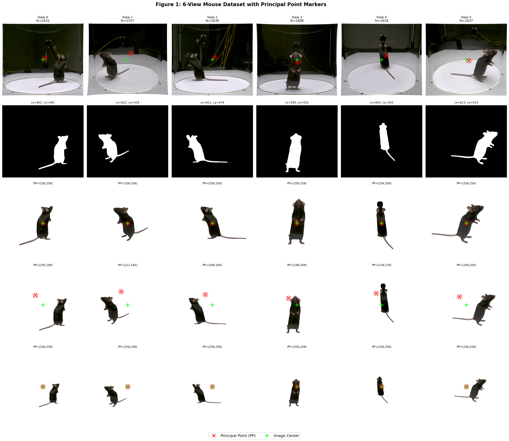
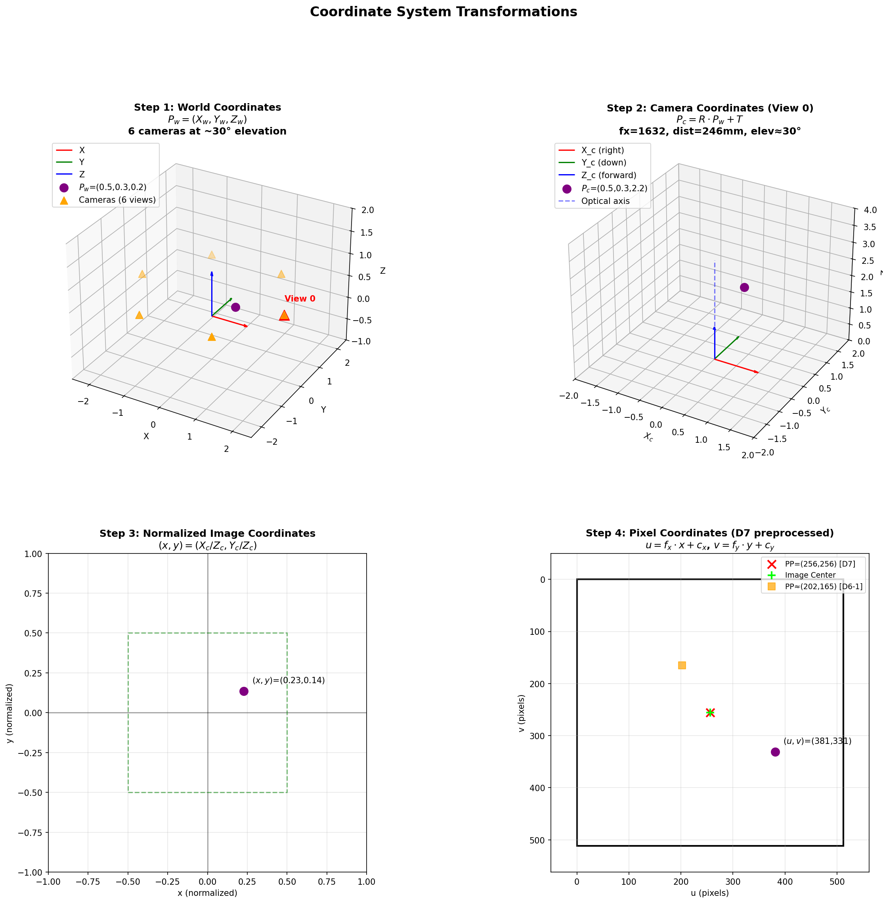
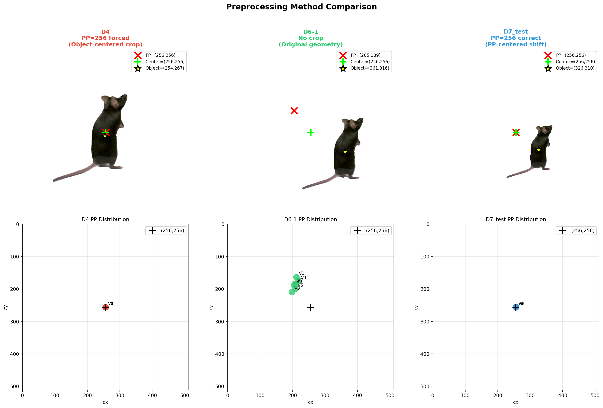
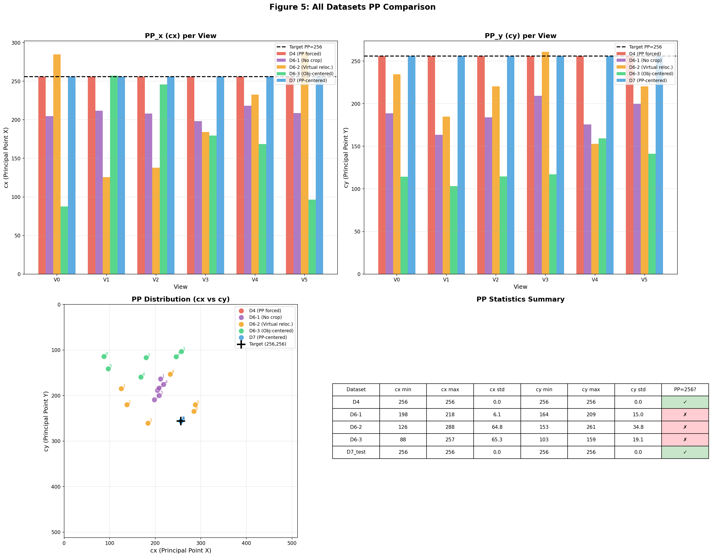
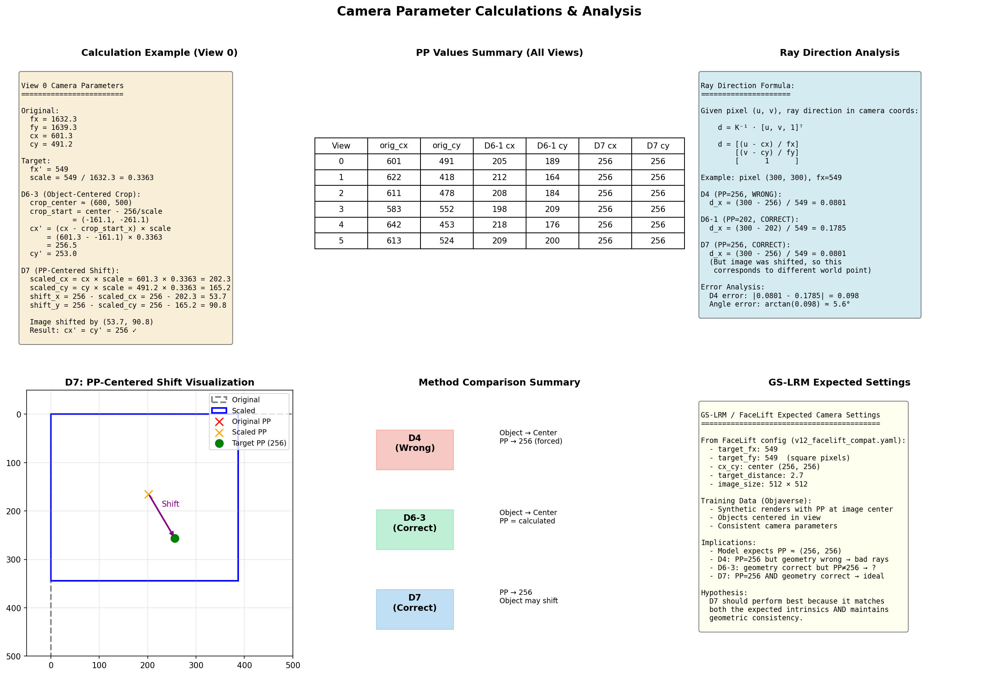

Generated: 2026-01-19 00:07 | Version: v7 | Data: markerless_mouse_1_nerf (DANNCE)
GS-LRM/FaceLift was trained on Objaverse synthetic data with:
Ray Direction from Pixel (u, v):
\[ \mathbf{d}_c = \mathbf{K}^{-1} \cdot \begin{bmatrix} u \\ v \\ 1 \end{bmatrix} = \begin{bmatrix} (u - c_x) / f_x \\ (v - c_y) / f_y \\ 1 \end{bmatrix} \]Critical: If \(c_x, c_y\) are wrong, the ray direction is wrong, causing multi-view inconsistency and ghosting artifacts.
| View | fx | fy | cx | cy | Distance (mm) |
|---|---|---|---|---|---|
| 0 | 1632 | 1639 | 601 | 491 | 246 |
| 1 | 1557 | 1581 | 622 | 418 | 415 |
| 2 | 1630 | 1633 | 611 | 478 | 364 |
| 3 | 1606 | 1618 | 583 | 552 | 340 |
| 4 | 1618 | 1629 | 642 | 453 | 318 |
| 5 | 1637 | 1643 | 613 | 524 | 306 |

Figure 1: 6-view images showing Original, Mask, D4, D6-1 (no crop), and D7 preprocessing. Red X = Principal Point, Green + = Image Center.

Figure 2: Step-by-step coordinate transformation from World to Pixel coordinates. Step 2 uses View 0 camera (fx=1632, cx=601, cy=491) as reference example.
Step 1: World → Camera (Extrinsic)
\[ \mathbf{P}_c = \mathbf{R} \cdot \mathbf{P}_w + \mathbf{T} \]Step 2: Camera → Normalized (Perspective Division)
\[ x = X_c / Z_c, \quad y = Y_c / Z_c \]Step 3: Normalized → Pixel (Intrinsic)
\[ u = f_x \cdot x + c_x, \quad v = f_y \cdot y + c_y \]Combined (Full Projection):
\[ \begin{bmatrix} u \\ v \\ 1 \end{bmatrix} \sim \underbrace{\begin{bmatrix} f_x & 0 & c_x \\ 0 & f_y & c_y \\ 0 & 0 & 1 \end{bmatrix}}_{\mathbf{K}} \cdot \underbrace{\begin{bmatrix} R & T \end{bmatrix}}_{[R|T]} \cdot \begin{bmatrix} X_w \\ Y_w \\ Z_w \\ 1 \end{bmatrix} \]
Figure 3: Comparison of D4, D6-3, and D7 preprocessing methods.
| Method | Strategy | PP Value | Object Position | Geometry |
|---|---|---|---|---|
| D4 | Object-centered crop + PP=256 forced | 256 | Center | ❌ WRONG |
| D6-1 | No crop (resized to 512×512) | Varies (scaled) | Original | ✅ Correct |
| D7 | PP-centered shift + PP=256 | 256 | ~30px off | ✅ Correct |
When image is shifted by \(\Delta\), the projection equation becomes:
\[ u' = u + \Delta = f_x \frac{X}{Z} + c_x + \Delta \]This is equivalent to having a new principal point:
\[ c_x' = c_x + \Delta \]Reference: ksimek.github.io - Intrinsic Matrix
1. Scale image: scale = target_fx / orig_fx 2. Compute scaled PP: scaled_cx = orig_cx × scale 3. Compute shift: shift = 256 - scaled_cx 4. Apply affine transform: image' = scale × image + shift 5. Set PP = (256, 256) ← mathematically consistent!
Original: fx=1632, cx=601, cy=491 Target: fx=549 scale = 549 / 1632 = 0.3364 scaled_cx = 601 × 0.3364 = 202.2 scaled_cy = 491 × 0.3364 = 165.2 shift_x = 256 - 202.2 = +53.8 shift_y = 256 - 165.2 = +90.8 Result: Image shifted by (+53.8, +90.8), PP = (256, 256) ✓
| Aspect | D6-1 | D7 |
|---|---|---|
| PP Value | 195-230 (scaled) | 256 (fixed) |
| Object Position | Original position | ~30px off-center |
| FaceLift Compatibility | PP mismatch | PP matches ✅ |
| Geometric Accuracy | ✅ Correct | ✅ Correct |

Figure 5: Comprehensive comparison of all preprocessing methods (D4, D6-1, D6-2, D6-3, D7).
| Dataset | Approach | PP Handling | Geometry | FaceLift Compat. |
|---|---|---|---|---|
| D4 | Object-centered crop | PP=256 (forced) | ❌ Wrong | PP ok, rays wrong |
| D6-1 | No crop (resize only) | PP scaled | ✅ Correct | PP varies |
| D6-2 | Virtual camera relocation | PP varies | ✅ Correct | PP varies |
| D6-3 | Object-centered crop | PP calculated | ✅ Correct | PP varies |
| D7 | PP-centered shift | PP=256 (correct) | ✅ Correct | ✅ Optimal |
| View | fx | cx | cy | Distance (mm) | Elevation | Azimuth | FoV (H) |
|---|---|---|---|---|---|---|---|
| 0 | 1632 | 601 | 491 | 246 | ~30° | 0° | ~39° |
| 1 | 1557 | 622 | 418 | 415 | ~30° | 60° | ~41° |
| 2 | 1630 | 611 | 478 | 364 | ~30° | 120° | ~39° |
| 3 | 1606 | 583 | 552 | 340 | ~30° | 180° | ~40° |
| 4 | 1618 | 642 | 453 | 318 | ~30° | 240° | ~39° |
| 5 | 1637 | 613 | 524 | 306 | ~30° | 300° | ~39° |
Note: Elevation and Azimuth are approximate based on DANNCE setup. FoV = 2 × arctan(width / 2fx)
| Property | Mouse (Original) | Mouse (Preprocessed) | FaceLift (Objaverse) |
|---|---|---|---|
| Image Size | 1152 × 1024 | 512 × 512 | 512 × 512 |
| Focal Length | 1557-1637 | 549 | 549 |
| PP (cx, cy) | (583-642, 418-552) | (256, 256) for D7 | (256, 256) |
| Camera Distance | 246-415 mm | 2.7 (normalized) | ~2.7 |
| Elevation | ~30° (single ring) | ~30° | -10° to 40° (varied) |
| Azimuth | 0°, 60°, ... 300° | Same | 0°-360° (random) |
| Number of Views | 6 fixed | 4 input / 6 total | 1-8 input |
| Object Category | Mouse (animal) | Mouse | Synthetic objects |

Figure 4: Detailed camera parameter calculations and method comparison.
For pixel (300, 300) in View 0:
D4 (PP=256, WRONG geometry):
\[ d_x = \frac{300 - 256}{549} = 0.080 \]D6-1 (PP=202, correct geometry):
\[ d_x = \frac{300 - 202}{549} = 0.178 \]Ray direction error (D4 vs correct):
\[ \Delta d = |0.080 - 0.178| = 0.098 \] \[ \theta_{error} = \arctan(0.098) \approx 5.6° \]Note: For D6-3 (object-centered crop, PP≈87.5), the error would be larger: ~17°
| Priority | Experiment | Purpose |
|---|---|---|
| 1 | D7_E1 vs D6-3_E1 vs D4_E1 | Compare all preprocessing methods |
| 2 | D7_E2 (GT mask) | Test with foreground-only loss |
| 3 | D7_E3 (Alpha mask) | Self-supervised mask approach |
D7 should perform best because: